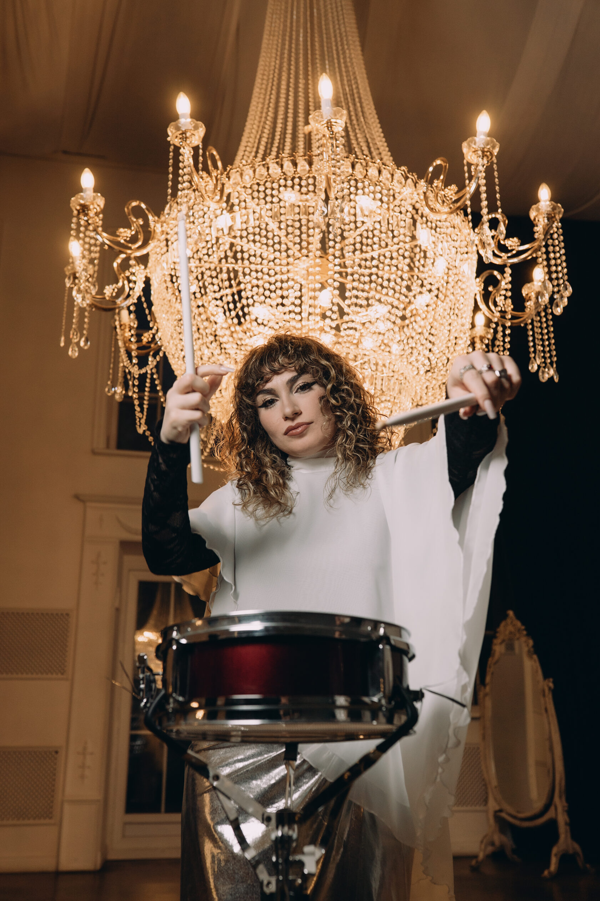
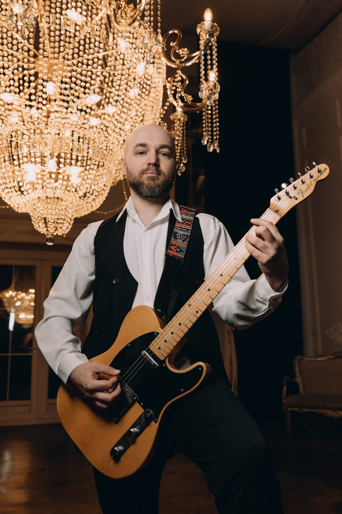
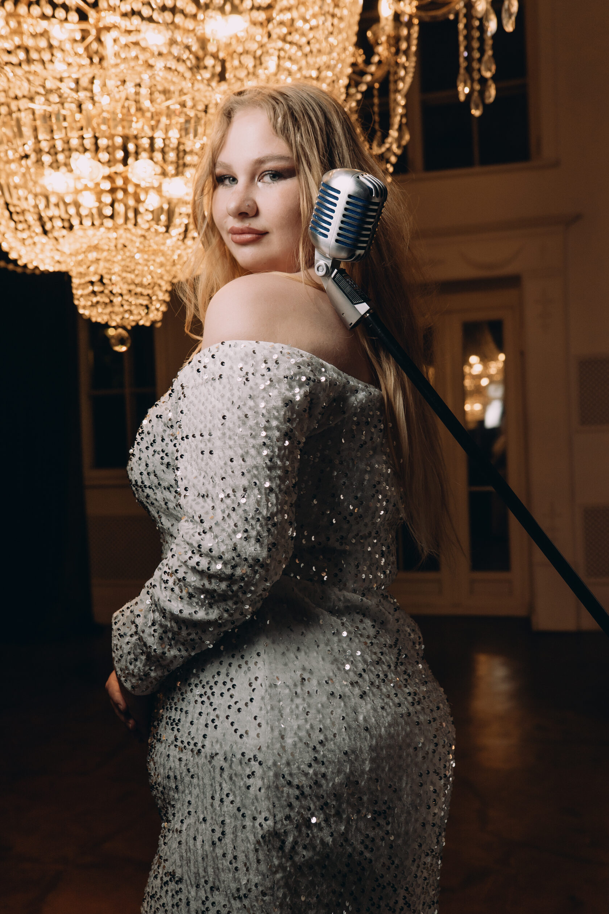
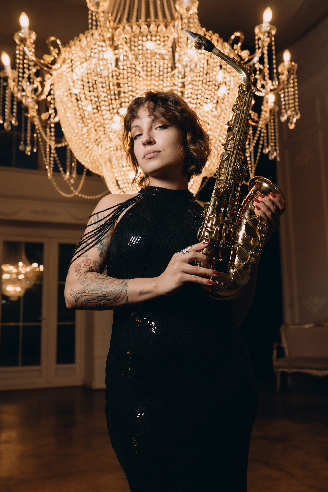
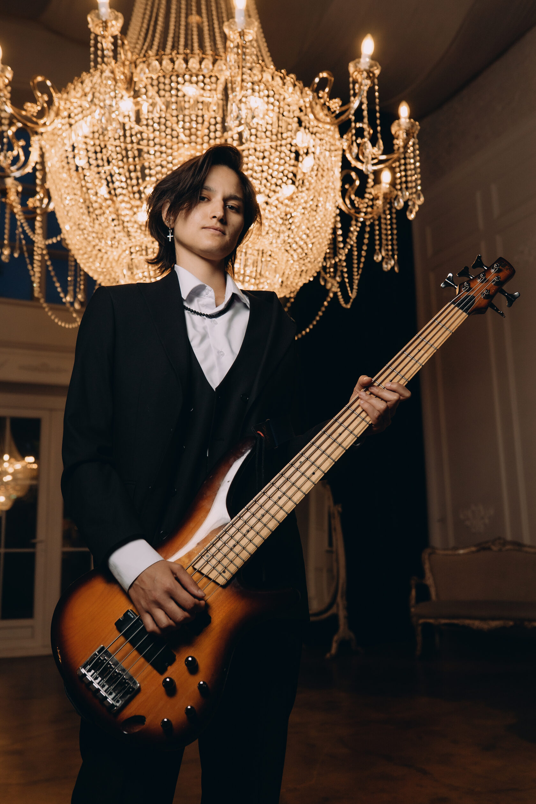

Кавер-группа и дуэт
Посмотрите выступления и выберите формат живого звука для своего события.
Ведущий + DJ + кавер-группа «То, что надо»
МУЗЫКА, КОТОРАЯ СОЗДАЁТ АТМОСФЕРУ
Ведущий и DJ ведут программу без пауз, а кавер-группа превращает музыкальные блоки в самостоятельное шоу. В составе — вокал, саксофон, гитара, бас и барабаны.
ведущий + DJ5 музыкантовживой звук
Обсудить формат
Состав группы5 музыкантов · нажмите, чтобы раскрыть





Ведущий + DJ + кавер-дуэт
ЖИВОЙ ЗВУК В КАМЕРНОМ ФОРМАТЕ
Ведущий и DJ отвечают за программу и непрерывную музыку, а два вокалиста добавляют знакомые хиты и живое общение с гостями без большой сцены и сложного технического райдера.
ведущий + DJ2 вокалиста2 сета по 20 минут
Обсудить формат